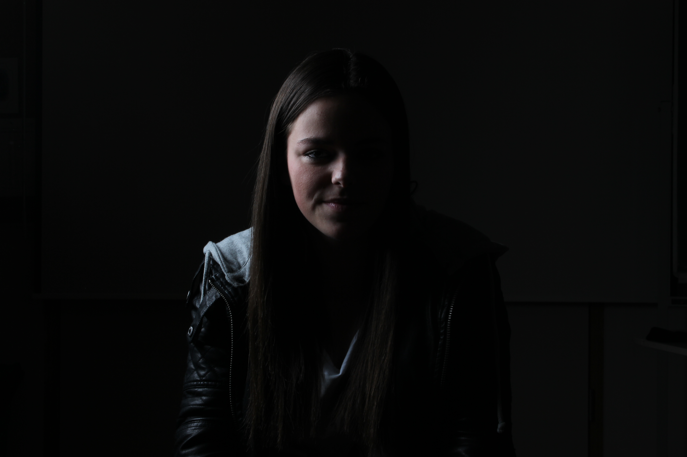

Portfolio
Mein Name ist Eilin Scherl, ich bin 25 Jahre alt. Meine Leidenschaft für das Zeichnen und meine ausgeprägte
Kreativität haben mich dazu bewogen, die Kreativhauptschule Müllerstraße zu besuchen. Danach folgten 5 Jahre
Ferrarischule im Bereich "Mediendesign". Hier konnte ich erste Erfahrungen sammeln und dies hat mir gezeigt das ich
in diesem Bereich unbedingt mal tätig sein möchte. Hier habe ich auch ein 4-wöchiges Praktikum in Hamburg absolviert.
Ich war in der Firma Monark. Dort habe ich viel fotografiert und habe diese Bilder dann auch in Photoshop bearbeitet.
Nach Abschluss meiner Lehre als Bürokauffrau im Jahr 2019 entschied ich mich, meine Interessen im kreativen Bereich
weiter zu verfolgen. Daher habe ich mich für eine Ausbildung in der Druckvorstufe entschieden, mit dem Ziel, später
die Zusatzprüfung im Mediendesign abzulegen. Am 20.07.2023 habe ich schließlich meine Mediendesign-Lehre erfolgreich
abgeschlossen und dieses Portfolio erstellt, um Ihnen einen Einblick in meinen Stand in der Mediendesign-Technik zu geben.
In meiner Freizeit besuche ich gerne Konzerte, um Erinnerungen festzuhalten, indem ich Fotos mache und Videos schneide. Zudem bin ich
leidenschaftliche Fotografin und besitze daher eine Spiegelreflexkamera. Mein Interesse gilt auch der Webseitenprogrammierung, wie Sie an
diesem Portfolio sehen können, das ich mithilfe einer Webseite erstellt habe.
Ich bin vielseitig einsetzbar im Bereich Mediendesign und strebe danach, meine Fähigkeiten weiter auszubauen. Obwohl es schwierig sein kann,
einen Job in diesem Bereich zu finden, da oft viel Berufserfahrung gefragt ist, bin ich überzeugt, dass meine technischen Fähigkeiten im
Mediendesign mich qualifizieren. Ich hoffe daher, dass Sie mir die Chance geben können, meinem Traumberuf näher zu kommen und mein Wachstum
in Ihrem Unternehmen zu unterstützen.
Das Logo "DESIGN" habe ich selbst entworfen. Die Buchstaben "ES" stehen für meinen Vor- und Nachnamen, während das Herz meine Liebe zum Design
in all seinen Facetten symbolisiert. Ich finde diese Kombination aus meinem Namen und dem Designkonzept sehr passend. Die Verwendung einer
Serifenschrift verleiht dem Logo einen künstlerischen Touch.
Während meiner bisherigen beruflichen Erfahrungen im Personalshop konnte ich wichtige Einblicke gewinnen. Jedoch entsprach die grafische Ausrichtung
nicht meinen Vorstellungen. Daher hoffe ich, eine Agentur zu finden, die meinen Vorstellungen und Fähigkeiten im Grafikdesign entspricht.